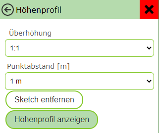

Custom Tools¶
Custom tools are tools that appear in the viewer’s toolbar but are not part of the standard WebGIS tools. These tools can, for example, be simple buttons (e.g. for extended metadata of a map) or can respond to interactions with the map (click on the map or dragging a rectangle). In all cases, after a user action (click on the button, click on the map, or dragging a rectangle), a link is called, to which corresponding values can be passed.
Tools with Map Interaction¶
Custom tools are added to the viewer in custom.js with the following command:
webgis.custom.tools.add({
name: 'Super Tool',
command: 'https://www.google.com/maps/@{y},{x},19z',
});
If you add a custom tool in custom.js, it is added to all maps of this portal page. If the tool should only appear in certain maps, this can be controlled via conditions. For example, the variable mapUrlName contains the name of the currently opened map:
if (mapUrlName === "Geoland") {
webgis.custom.tools.add({
name: 'Super Tool',
command: 'https://www.google.com/maps/@{y},{x},19z'
});
}
Tip
This method can be applied to all use cases described here, e.g. for markers or usability optimizations.
Properties of Custom Tools¶
The parameter passed is an object that describes the tool and must contain at least the properties name and command. The following table describes all possible properties:
Property |
Description |
|---|---|
|
Name of the button. |
|
A unique ID for the tool, if it should be selectable via a parameterized call of the map viewer. |
|
URL that is called on a user action. Placeholders can be used (see below). |
|
Controls how the link is called:
|
|
Executes the {
result: result, // Das Ergebnis der Abfrage (Objekt bei JSON oder ein Text)
map: map, // Das aktuelle Map-Objekt
uiElement: uiElement // Das UI-DOM-Element des Werkzeugs, in das beispielsweise Ergebnisse geschrieben werden können
}
Example of a tool with a callback function: webgis.custom.tools.add({
name: 'Fetch Tool',
command: 'https://.../rest?x={x}&y={y}',
tooltype: 'click',
cursor: 'crosshair',
image: 'cursor-plus-26-b.png',
command_target: function(response) {
const map = response.map;
const result = response.result;
// Remove the custom tool marker
map.removeMarkerGroup('custom-temp-marker');
// Add a custom tool marker
map.toMarkerGroup('custom-temp-marker', map.addMarker({
lat: result.lat,
lng: result.lng,
text: '<div>'+result.text+'</div>',
openPopup: true,
buttons: [{
label: 'Marker entfernen',
onclick: function (map, marker) { map.removeMarker(marker); }
}]
}));
$('<pre>')
.text(JSON.stringify(response.result))
.appendTo($(response.uiElement));
}
});
|
|
Type of the tool:
|
|
Area of the toolbar in which the tool is shown:
|
|
Link to a 26x26px icon for the button. Can be an absolute path or a file name, if the icon is located in |
|
Text shown as a tooltip when hovering the mouse over the button. |
|
Description of the tool. Shown if a user interaction is required. |
|
A function can optionally be specified here that is executed before the modify_event: function(map, e) {
// set the world coordinates to a different value (lng/lat multiplied by 100)
// this coordinate will be used in the command URL placeholders {X} and {Y}
e.world.X = e.world.lng*100;
e.world.Y = e.world.lat*100;
console.log('modified Event', e);
}
This method can, for example, be used to convert the coordinates to a different coordinate system before they are passed to the target URL. |
Placeholders for command¶
For the command property, various placeholders can be inserted into the URL to pass parameters from the map to another web page. Depending on the tooltype, different placeholders can be used, which have a specific meaning depending on the context.
Placeholder |
ToolTypes |
Description |
|---|---|---|
|
|
The extent of the current map view in geographic coordinates. Here, |
|
|
The bounding box of the current map view in geographic coordinates.
Equivalent to: |
|
|
The center point of the current map view in geographic coordinates. |
|
|
The current map scale. |
|
|
As above, but here no geographic coordinates are passed; instead, coordinates in the map coordinate system are used (e.g. GK-M34). |
|
|
The point the user clicked on, in geographic coordinates. If the user drags a window, this value corresponds to the center of the window. |
|
|
As above, but in the map coordinate system. |
|
|
The extent of the dragged rectangle in geographic coordinates. |
|
|
The bounding box of the dragged rectangle.
Equivalent to: |
|
|
As above, but for the map coordinate system. |
|
|
Allows a sketch geometry to be passed as well-known text (
|
|
|
Specifies the coordinate system in which the sketch passed via |
Custom Tools with Input Fields¶
If parameters should already be selected in the viewer to be passed to the target page, this can be done via the uiElements property. This allows input fields to be provided before the tool is actually executed, in order to pass custom values to the URL.
Example: A tool for elevation profiles, where the user can enter parameters such as vertical exaggeration and vertex spacing before execution.
webgis.custom.tools.add({
name: 'Höhenprofil',
command: 'https://server.com/profile?ueberhoehung={ueberhoehung}&hintergrund=bmapgrau&stuetzpunktabstand={stuetzpunktabstand}&title={profile_title}&polygonzug={wkt}&crs=31256',
command_target: 'dialog',
tooltype: 'sketch1d',
image: 'profil.png',
uiElements: [
{ type: 'label', label: 'Titel' },
{ id: 'profile_title', type: 'input-text' },
{ type:'label', label:'Überhöhung' },
{ id: 'ueberhoehung', type: 'select', options: [
{ label: '1:1', value: 1 },
{ label: '2:1', value: 2 },
{ label: '3:1', value: 3 }
]},
{ type: 'label', label: 'Punktabstand [m]' },
{ id: 'stuetzpunktabstand', type: 'select', options: [
{ label: '1 m', value: 1 },
{ label: '2 m', value: 2 },
{ label: '3 m', value: 3 }
]}
]
});
Note
In this example, the user can adjust various parameters before the tool is executed. The id of the input fields can be used as a placeholder in the command URL.
Types of Input Fields¶
There are different input field types available for the uiElements property:
Type |
Description |
|---|---|
|
Simple single-line text field. |
|
Multi-line text field for longer input. |
|
Input field for numeric values. |
|
Date field with time. |
|
Dropdown list for selecting a predefined value. The available options must be defined as an array (see example above). |
The tool dialog for the example above would look as follows:
